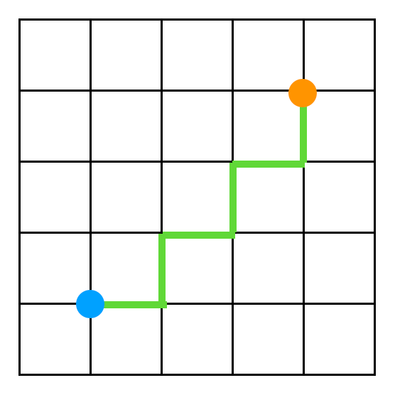
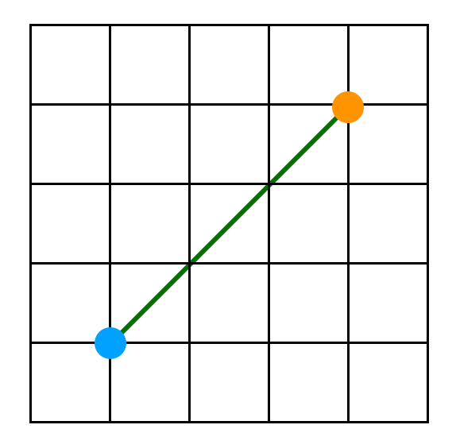
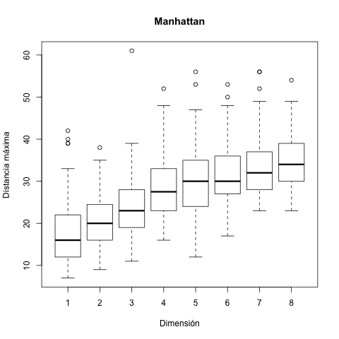
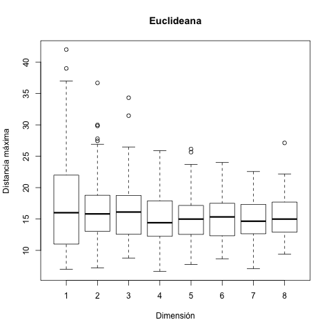
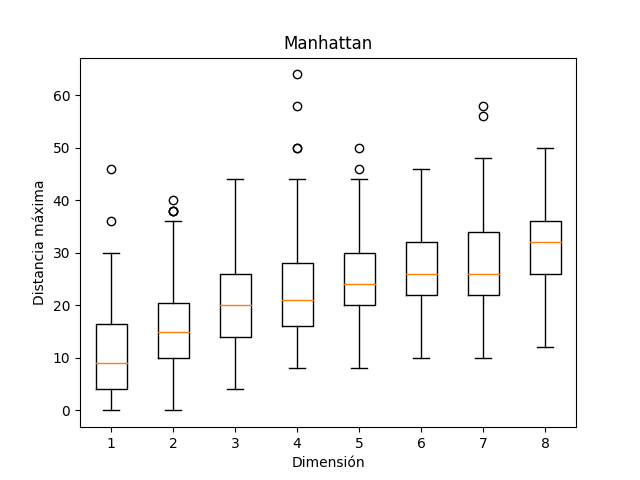
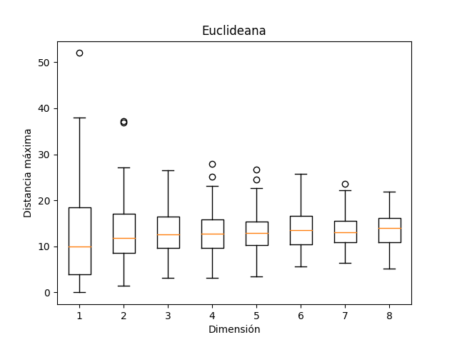

Movimiento Browniano refiere a una partícula cambiando su posición uniformemente al azar. Los movimientos pueden ser de muchos tipos distintos, pero en esta práctica nos limitamos a un caso sencillo donde la partícula mueve en pasos discretos, es decir, cada paso mide lo mismo, y las únicas posibles direcciones de movimiento son las direcciones paralelas a los ejes cardinales del sistema de coordenadas en el cual se realiza el movimiento. Vamos a utilizar pasos unitarios (es decir, el paso mide uno), teniendo como la posición inicial de la partícula el origen.
En una dimensión, la posición
inicial de la partícula sería entonces pos
<- 0 y en cada paso, con probabilidad 0.5
se incrementa y en el otro caso de decrementa
su posición. En R, esto es
sencillo. Usaremos runif(1) para generar un
número pseudoaleatorio entre cero y uno (ya que esos son
los límites por omisión para la rutina en
cuestión) y un ciclo for para realizar una
cantidad deseada de pasos. La variable pos contiene
la posición de la partícula, la
variable dur indica la duración total de la
simulación (es decir, el número de pasos a
realizar) y la variable t (por "tiempo") es un
simple contador. Se ocupa una
condición if-else para elegir entre
incremento y decremento de la posición.
Vamos a colocar el código en un archivo para mayor
facilidad de modificación y reuso posterior; el modo
gráfico de R permite crear y editar archivos de texto y
colocamos lo siguiente en un archivo p1.R:
pos <- 0
runif(1)
dur <- 10
for (t in 1:dur) {
if (runif(1) < 0.5) {
pos <- pos + 1
} else {
pos <- pos - 1
}
print(pos)
}
El archivo se puede ejecutar o desde la interfaz gráfica de R o en la
línea de instrucciones del sistema operativo con Rscript
p1.R. La ejecución produce una salida impresa (con valores
diferentes en cada ejecución ya que es un movimiento pseudoaleatorio):
[1] -1
[1] -2
[1] -1
[1] -2
[1] -1
[1] 0
[1] -1
[1] -2
[1] -3
[1] -2
En Python, es aún más sencillo:
from random import random
random() # probar en interactivo
pos = 0
dur = 10
for t in range(dur):
if random() < 0.5:
pos += 1
else:
pos -=1
print(pos)
Lo que queremos estudiar en esta práctica es qué tan lejos una
partícula llega, por máximo, desde el origen, en función del número de
pasos y además en función del número de dimensiones en el sistema de
coordenadas. Para una dimensión, la distancia es simplemente el valor
absoluto de la coordenada, y la distancia máxima es el mayor valor
absoluto que se alcanza durante la caminata. Modificamos el
archivo p1.R para que haga eso nuestra versión en R
pos <- 0
mayor <- 0
dur <- 100
for (t in 1:dur) {
if (runif(1) < 0.5) {
pos <- pos + 1
} else {
pos <- pos - 1
}
dist <- abs(pos)
if (dist > mayor) {
mayor <- dist
}
}
print(mayor)
o bien el
archivo p1.py
para que haga eso nuestra versión en Python: la salida indica
la distancia máxima, pero sale diferente en distintas
ejecuciones por la naturaleza pseudoaleatoria de la caminata:
Rscript p1.R
[1] 10
Rscript p1.R
[1] 11
Rscript p1.R
[1] 6
Rscript p1.R
[1] 6
Rscript p1.R
[1] 12
Rscript p1.R
[1] 5
Rscript p1.R
[1] 11
python3 p1.py
8
python3 p1.py
19
python3 p1.py
16
python3 p1.py
15
python3 p1.py
20
python3 p1.py
6
Ahora extendemos el concepto en dos dimensiones: la partícula
inicia en el origen que ahora es un vector de dos
posiciones, pos = rep(0, 2) (para repetir el valor
cero dos veces). El movimiento se realiza en una de las dos
dimensiones, seleccionada uniformemente al azar, y puede ser
incremento o decremento como antes. Para ilustrar el
fenómeno, la siguiente animación realiza una
caminata de este tipo desde el centro del cuadro, terminando
cuando toca el borde o cuando se pone en pausa.
Ahora lo interesante es la definición de distancia de una posición $(x, y)$ desde el origen. Las dos opciones comunes son la distancia Manhattan que mide la suma de los valores absolutos de las coordenadas, $|x| + |y|$, y la distancia Euclideana que lo mide como el largo del segmento de línea que conecta el origen al punto en cuestión, $\sqrt(x^2 + y^2)$.
| Manhattan | Euclideana |
|---|---|
|  |  |
Para poder comparar si el tipo de distancia utilizado tiene
efecto, mejor creamos funciones para los dos casos, y que
funcionen de una vez con cualquier dimensión, incluyendo
el uno. Más aún, que funcionen entre un punto y
el origen o entre dos puntos arbitrarios. Así
serán más versátiles para usos futuros. Lo
colocamos en un archivo
aparte, distance.R
o distance.py,
tipo librería para prácticas futuras o proyectos
más adelante.
Teniendo esto, procedemos a adecuar el código para que, en primer lugar,
lo que colocamos en un archivo aparte, caminata.R o caminata.py y luego podemos probarlo en R
source("distance.R")
source("caminata.R")
caminata(2, 50, ed.orig)
caminata(2, 50, md.orig)
o en Python
from distance import ed_orig, md_orig from caminata import caminata print(caminata(2, 50, ed_orig)) print(caminata(2, 50, md_orig))
Además, se ocupa asegurar que
Para evitar complicaciones de llamadas a rutinas que provienen
de ambientes externos al cluster, concentramos toda la
funcionalidad dentro de la llamada a parSapply en
una
versión paralelizada con R.
En Python, se
logra lo
mismo con multiprocessing.
Para poder visualizar lo que sucede, se puede utilizar diagramas de caja-bigote para comparar caminatas de un mismo largo en dimensiones distintas con la distancia Manhattan.
Para colocar caracteres no-ASCII en las etiquetas en R, se debe utilizar su código Unicode, mientras en Python conviene declarar la codificación al inicio del archivo.
   Examina de manera sistemática los efectos de la dimensión en la distancia Euclideana máxima del origen del movimiento Browniano para dimensiones 1, 2, 3, 4 y 5, variando el número de pasos de la caminata (100, 1000 o 10000 pasos), con 30 repeticiones del experimento para cada combinación (1 con 100, 1 con 1000, 1 con 10000, 2 con 100, 2 con 1000, etc.) y grafica todos los resultados en una sola figura con diagramas de caja-bigote.
El primer reto es estudiar de forma sistemática y automatizada el tiempo de ejecución de una caminata (en milisegundos) en términos del largo de la caminata (en pasos) y la dimensión. Para medir el tiempo de una réplica, ejecútala múltiples veces y normaliza con la cantidad de repeticiones para obtener un promedio del tiempo de una réplica individual.
El segundo reto es realizar una comparación entre una implementación paralela y otra versión que no aproveche paralelismo en términos del tiempo de ejecución, aplicando alguna prueba estadística adecuada para determinar si la diferencia es significativa.
https://satuelisa.github.io/simulation/p1.html